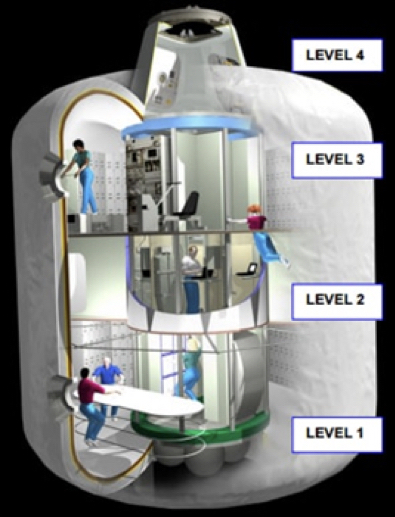
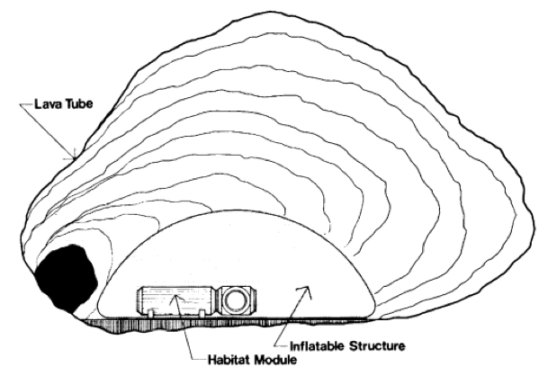
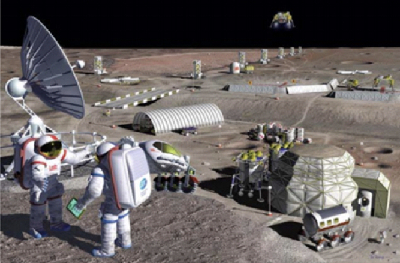

Overview of Deployable Structures and Materials for Lunar Habitation and Settlement
Writer: Anehita Oribabor
Date: Spring 2017
Citation: Oribabor, A. & Benaroya, H. (2017). Overview of Deployable Structures and Materials for Lunar Habitation and Settlement. Rutgers Research Review, 2(1).
My name is Anehita Oribabor and am a member of the Class of 2017 pursuing a major in Mechanical Engineering. I am from Pennsauken, NJ, and am the youngest of three sisters. In my spare time I practice yoga, painting, and playing my viola. I thrive when I am challenged to think creatively and critically. My quest for knowledge and fascination for the unknown greatly steered my collegiate pursuits. For the past several semesters, I have been conducting research on structural and material concepts for the astronomic cultivation of a settlement on the Moon. After graduating, I plan on studying robotics and design in graduate school. My advisor is Dr. Haym Benaroya in the Department of Mechanical and Aerospace Engineering. I am thankful for Dr. Benaroya's continual guidance and encouragement throughout my academic career.
Human captivation with space exploration and settlement dates to Greco-Roman culture and mythology. Voyages about space travel found in literature have helped fuel the imagination and have inspired many for centuries. A unique combination of creativity, science, and speculation can be found in the book, From Earth to the Moon by Jules Verne, published in 1865. Humanity's fascination with space and its connections to humankind has existed for ages and is ever-present today as well. The Moon, due to its closeness to earth, is a natural target for research scientists, and a first step for human exploration beyond our planet (Jablonski & Ogden, 2005). To achieve human exploration of the lunar surface, a structure must be created that is large enough to sustain human life, while providing protection from environmental threats and maintaining the proper psychological support for the crew. As technology becomes more capable of traveling and supporting life in space, scientists will continue to push forward for interplanetary exploration. Future colonization and utilization of the Moon's vast resources will provide the foundation needed to explore the inner and outer solar systems and beyond.
Throughout the 1960s and 1970s, space exploration and development was handled primarily by the government and military, with the National Aeronautics and Space Administration (NASA) being the prime example (Genta, 2014). The cold war climate spearheaded space technologies that were derived from military systems and development (Herppenheimer, 1997). The two superpowers at the time, the Soviet Union and the United States, were the only actors that participated in the 'space race' and for several decades they were the only countries capable of sending humans into space. This was a race more about national pride and prestige than about exploration and knowledge that would benefit mankind (Genta, 2014). Throughout this time, NASA and other agencies were eagerly prototyping and testing inflatable space structures, which ranged from space suits to full habitats. While space suit development continued at a strong pace from the early days of manned exploration to present times, the development of activities in inflatable habitats was not as vigorously pursued (Cadogan et al., 1999).
The most successful example of a physically prototyped, human-rated habitation module was the TransHab, which came into concept in 1997 (Figure 1). A team at NASA was given a challenge to design an interplanetary habitat module where a crew of six can travel to and from Mars using current launch systems and have the relevant volume needed to sustain life (Kennedy, 2002). The TransHab's inflatable design evolved through many design stages and proved to be a more efficient structure than the hard-aluminum alloy designs previously used during the Apollo era. Instead of being fully inflatable, the TransHab exhibited a hybrid structure with a rigid core and an inflatable exterior.

Figure 1: ISS TransHab internal view (Image Credit: NASA JSC S99-05363). Adapted from Kennedy et al., 2000.
The program for the International Space Station TransHab, along with similar projects, were discontinued and cancelled due to a rearrangement of governmental spending and budgeting in late 1990s (Pittman et al., 2012). However, in 2016, with conjoint efforts from NASA and Bigelow Aerospace, the TransHab was docked onto the International Space Station (ISS) and inflated (Figure 2).

Figure 2: Artist's concept of BEAM attached to the ISS. Adapted from Northon, 2016.
The fervor of space travel seemed to fizzle out after the cold war ended along with stricter budgeting controls from Congress which disabled NASA from physically prototyping new designs. However, what seemed to be the end of the era of space exploration prompted the birth of another via an emerging shift in ambitious, involving players who were not initially part of the "space race." The new model that emerged was not for space agencies to handle missions, but for private companies to handle all kinds of space activities. Without having to worry about governmental funding due to the backing of private companies, NASA handed out space contracts private contractors in an effort to provide cheaper equipment and transportation into space. A possible goal at present is for space missions to become completely privatized. The shift to a private approach entails a decrease in the cost of space exploration and the possibility of maintaining longer term space activities without the frequent changes in objectives and priorities imposed by politics (Genta, 2014).
To properly design an inflatable structure, knowledge and understanding of the environment in which it will be exposed to is crucial. The Moon has harsh conditions, which impose problems for construction on the lunar surface. Therefore, there are several constraints that need to be taken into consideration such as: (a) the effects of extreme lunar temperature cycles that induce thermal stresses, strains, and material fatigue and fracture, (b) protection from radiation, like cosmic rays, solar flares and micrometeoroids will call for dense materials to absorb the kinetic energy, (c) regolith can be used as a construction material to offset pressure induced loads and radiation protection for inflatable habitats, (d) dust suspension and dust deposition phenomenon will hamper devices and settle in crevices, and (e) the effects of gravity will call for a structure that can withstand external loads and internal pressures. As lunar development progresses, those constructing habitats must take caution not to disrupt the pristine lunar environment. Each inhabitant will have a responsibility to preserve and retain the quality of the Moon. The lunar base will be a self-contained and self-regulated ecosystem that fully controls and recycles all wastes and pollutants (Sadeh & Criswell, 1996).
Concepts for lunar outposts have been proposed even before the space age, but this report will emphasize on structures for human habitation. Structural designs proposed include: metal framed structures, hybrid structures, concrete structures and inflatable structures. Additionally, there are concepts for subsurface structures using the creation and nature of lunar lava tubes. In this concept, natural caverns in the form of 'lava tubes' (Figure 3) can serve as a relatively safe environment that is protected from meteorite impact, shelter against radiation and is at a constant, benign temperatures (Horz, 1985). These naturally protected environments can shelter and support inflatable habitats made from lightweight materials. However, further pursuit of this concept would require prior excavation of the lunar surface. Each structural concept discussed has the potential to evolve and satisfy the constraints put on building a lunar base.

Figure 3: The placement of an inflatable habitat inside a lava tube. Adapted from Daga et al., 1992.
Inflatable structures provide a means to work, live, and travel in space for long periods of time, while minimizing the cost of space transportation (Roberts, 1988). The flexible, readily collapsible walls help to support the internal pressure needed to maintain human habitation. In the event of a puncture, leakage, or loss of pressure, a composite structure made of ultra-lightweight, rigidizing materials are used in the interior liner to support the structure in case of an emergency. The desired stiffness, flexibility, and mass provide an attractive alternative to the rigid-metallic or purely inflatable structures (Jaffe, 1961), like the previously used Echo satellites. The reduction in complexity, compared to the deployment of large trusses or mechanisms, make the inflatable concept a quick and cheap alternative. Inflatable structures (Figure 4) have continuously been proven to offer high packing efficiency and reduced mass for cheaper launch costs in addition to a highly reliable expandable volume (Belvin et al., 2006).

Figure 4: Base with rigid and inflatable structures. Adapted from Belvin et al., 2006.
Resistance to external threats is achieved by a multi-functional layered wall, however a large number of layers is needed for the durability and protection of the inflatable system from micrometeoroid and orbital debris (MMOD). Advancements in material science are needed to reduce the weight of these flexible material systems (Belvin et al., 2006).
The establishment of a lunar base is a major first goal for further space exploration into space. It is suggested that an adaptable inflatable module is a desirable candidate for starting an initial base on the Moon. Modules that take advantage of lunar resources to achieve a cheaper, lighter and sustainable design are highly suggested. After the initial encampment and construction, the infrastructure will be extended to a full base to meet the growing needs of a colony. Financial resources and transportation methods are to be met through privatization of the space industry, which will lessen the economic burden put on governments to fund space agencies. The future of human civilization will lie in space and the first step into the endless frontier is with a human lunar base.
References
- Belvin, W., Watson, J., & Singhal, S. (2006). Structural Concepts and Materials for Lunar Exploration Habitats. Space 2006.
- Cadogan, D., Stein, J., & Grahne, M. (1999). Inflatable composite habitat structures for lunar and mars exploration. Acta Astronautica, 44(7-12), 399-406.
- Daga, A. W., Daga, M. A., & Wendel, W. R. (1992, September). Evolving concepts of lunar architecture: The potential of subselene development. In Lunar Bases and Space Activities of the 21st Century (p. 281).
- Genta, G. (2014). Private space exploration: A new way for starting a spacefaring society?. Acta Astronautica, 104(2), 480-486.
- Heppenheimer, T. A. (1997). Countdown. History of Space Flight.
- Horz, F. (1985). Lava tubes-potential shelters for habitats. In Lunar bases and space activities of the 21st century (pp. 405-412).
- Jablonski, A. M., & Ogden, K. A. (2010). A Review of Technical Requirements for Lunar Structures–Present Status. Lunar Settlements, 451.
- Jaffe, L. (1961). Project Echo Results. Astronautics, May.
- Kennedy, K. (2002, October). Lessons from TransHab: An Architect's Experience. In AIAA Space Architecture Symposium (p. 6105).
- Northon, K. (2016). NASA to Attach, Test First Expandable Habitat on Space Station. NASA.
- Pittman, B., Rasky, D., & Harper, L. (2012). Infrastructure Based Exploration – An Affordable Path To Sustainable Space Development. 63rd International Astronautical Congress.
- Roberts, M. (1988). Inflatable habitation for the lunar base. LPI Contributions, 652, 204.
- Sadeh, W. Z., & Criswell, M. E. (1996). Infrastructure for a lunar base. Advances in Space Research, 18(11), 139-148.